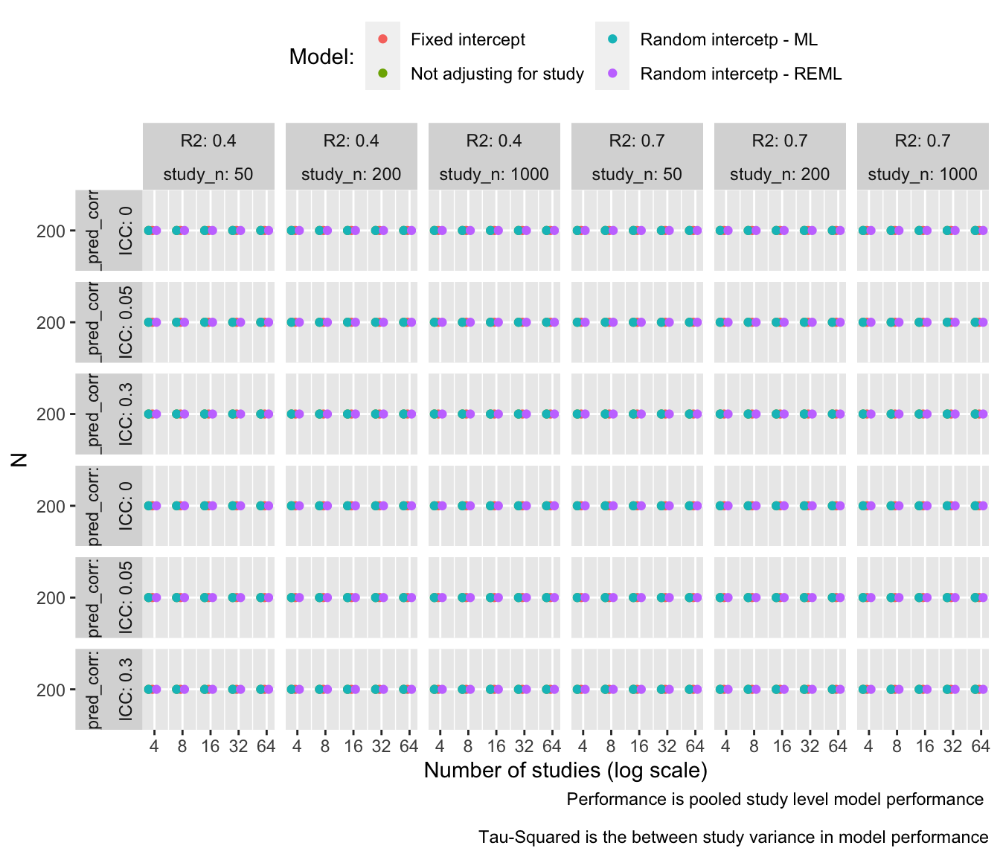
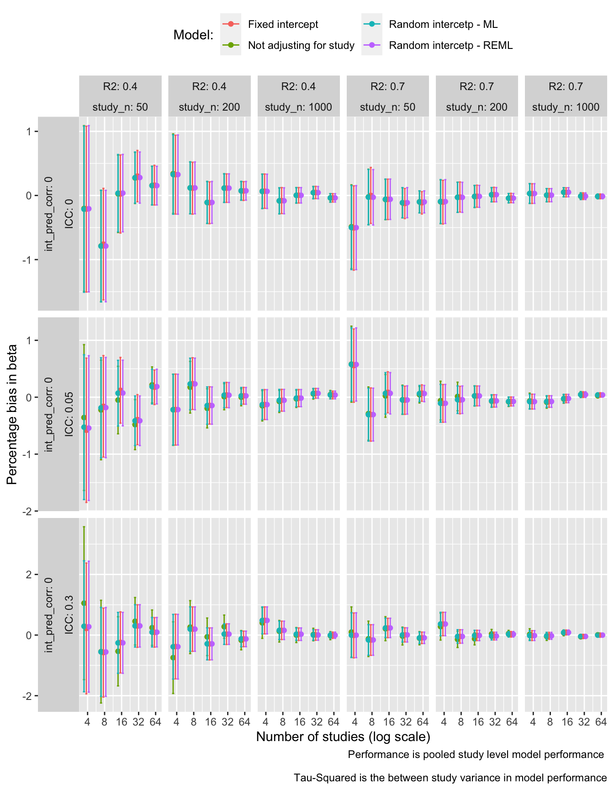
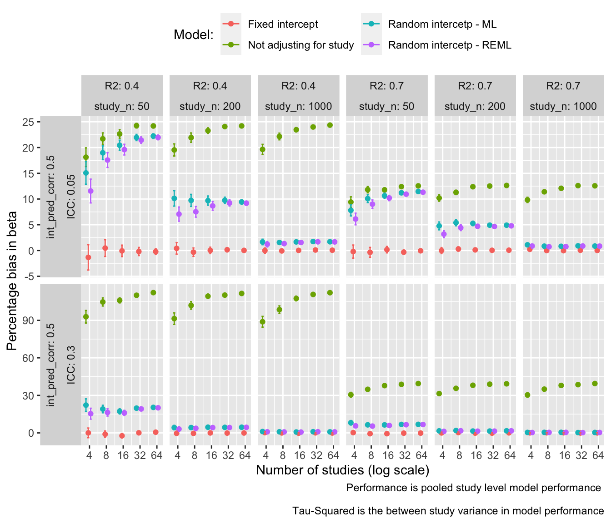
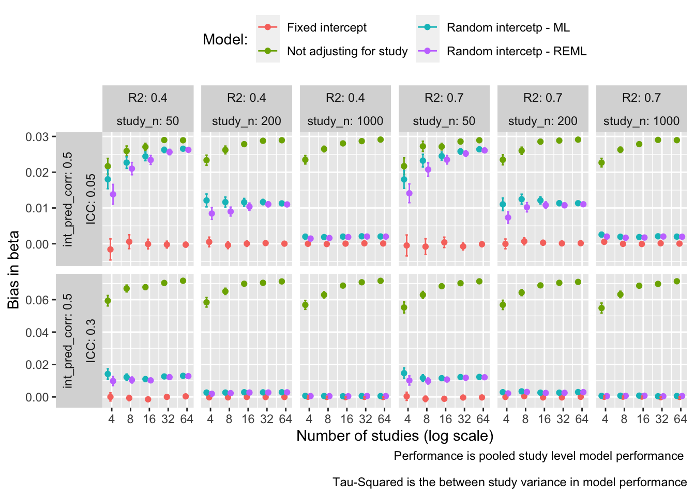
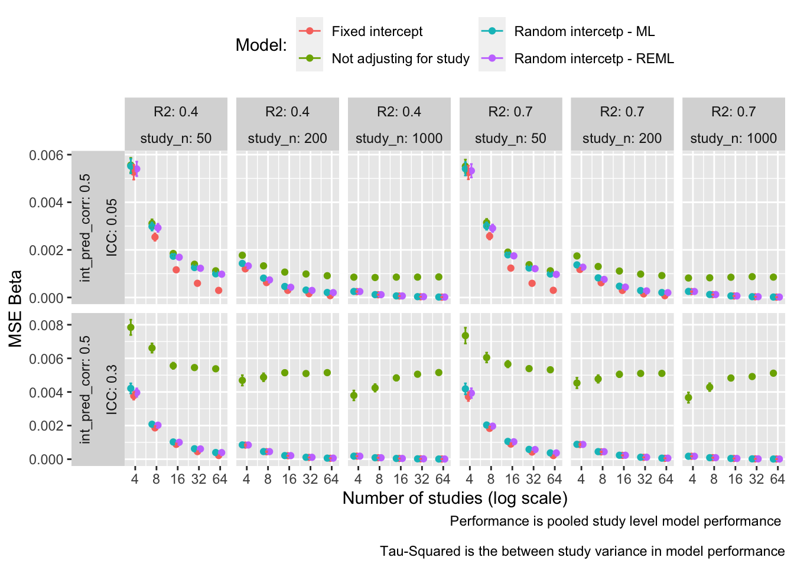
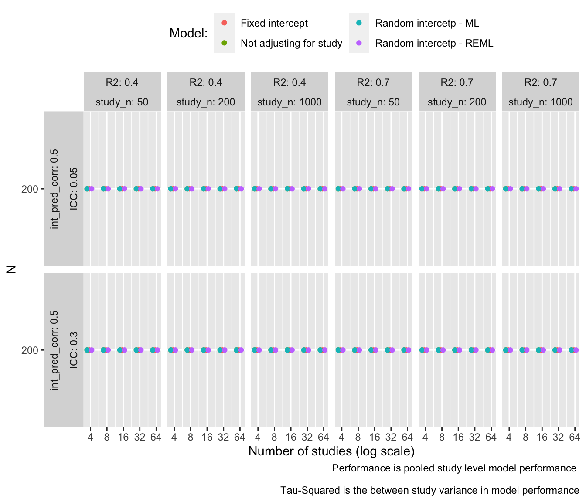
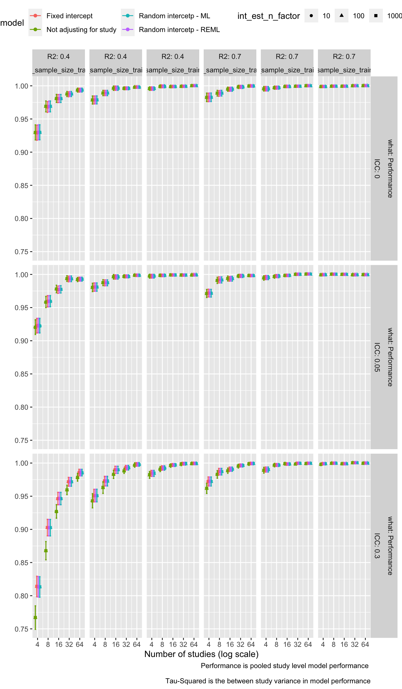
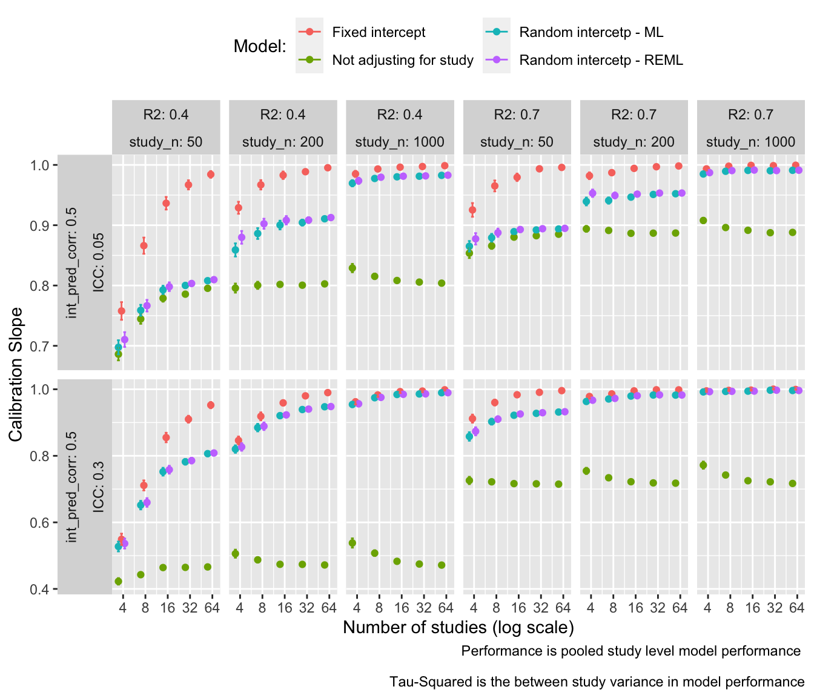

# A tibble: 5 × 2
Parameter Values
<chr> <chr>
1 N studies 4, 8, 16, 32, 64
2 Study sample size 50, 200, 1000
3 ICC 0, 0.05, 0.3
4 R2 0.4, 0.7
5 Intercept-predictor corr 0, 0.5 Holiday Results
Intro
Quatro doc Showing results of simulations run over my holiday. New addition was calcualtion of bias for beta covariates to investiage why we are seeing no impact on performance from random effects models when we introduce level 2 endogenity.
Simulaiton scenarios:
Simulation scenarios run
Scenarios run factorially. Note, when the ICC is zero, the intercept-predictor correlation is zero as there is no between study variability in intercepts.
Data generating parameters
The models data/models have 12 predictors all with the same beta value. Beta, and values of the variances of different components are chosen to give the required r-squared, ICC and correlations These are the parameters used in the models with correlations between intercept and predictors. beta_int is a parameter in the data generating model for predictors. When there is less variability in study intercepts (ICC = 0.05) beta_int needs to be greater to give the same correlation between predictors and intercepts. Outcomes do not have constant variance.
# A tibble: 4 × 6
R2 ICC sigma_u sigma_e beta_x beta_int
<dbl> <dbl> <dbl> <dbl> <dbl> <dbl>
1 0.4 0.05 0.224 0.975 0.120 2
2 0.4 0.3 0.548 0.837 0.0639 0.816
3 0.7 0.05 0.224 0.975 0.230 2
4 0.7 0.3 0.548 0.837 0.181 0.816Number of models that converge
Should be 200 (the number of simulation reps)

Bias in beta
Bias in betas
We expect the bias in betas to be zero for all models when there is no correlation between intercepts and predictors. When there is a correlation we expect bias when:
- Study is not adjusted for, as the correlation between study intercepts and predictors will lead to bias in estiamtes of beta (confounding to use causal language).
- Maximum liklihood is used for estiamting random intercepts models and the number of studies is low (due to underestimation of between study variance, and consequently under-adjsutment for study)
- All random intercept models due to level 2 endogeneity
The following plots examine the difference between the mean estimated betas and the true value for betas. They show percentage bias in beta on the y-axis. Each model has 12 beta parameters, that should be equal. The plots takes the mean across all beta parameters.
No correlation between predictors and study intercepts
Negligible bias for all scenarios

Correlation between predictors and study intercepts (level 2 endogeneity)
- Logistic regression with fixed intercepts gives unbiased betas accross all scenarios.
- No adjusting for study leads to a large bias When using random intercept models bias reduces with stidy size, to become almost zero for study size 1000.
- Bias, as a percentage of beta. is smaller with higher R-squared as in these scenarios beta is larger. the absolute value of the bias is similar.
- The bias that comes from not adjusting for study increases with the number of studies - I don’t understand why.

Absolute bias - similar bias for different r-squared

What about mean squared error in beta estimates?
Prediction error will be related to the mean squared error in beta-coefficients. This will incorporate both the bias in coefficients and the variance. If it is the case that the variance is much larger than the bias, the mean squared error will be dominated by variance , and relatively low ammounts of bias will become negligible. (MSE = sum of variance and suqare of bias in estimator)
This is the case - MSE is similar accross all scenarios that adjust for study, although fixed intercept logistic regression does best.

What about predictive performance…
Results shown for prediction in new samples where 1000 observations are used to estaimte the intercept - this is optimal.
Check ns again
Extra step in predidcion pipeline - meta-analyzing model results

R-squared
note performance calculated within study. This leads to lower r-squared than the overall r-sqaured as portion of variance taht is due to study intercepts is not included.

Calibrtaion slope
- better calibration from fixed intercept models
- Bias from level 2 endogeneity has more of an impact on calibraiton than r-squared
- This is because estimates of betas are biased upwards. This leads to more extreme predictions for people with extreme values of x, leading to calibration slope less than 1 (note to self - calibration has observed as outcome and predicted as predictor).

Conclusions
- When there is level 2 endogeneity we see bias in beta estimates.
This bias does not reduce with an increasing number of studies but it does reduce with higher study size. This is consistent with the literature, which shows (Castelano 2014) (analytically shown for generalised least squared estimates in Maddala 1971). Intuitively the random intercept estimate of beta can be seen as pooling between cluster and within cluster info in beta. Bias arises from correlation between the between cluster variation in x and intercepts. This leads to bias in the between cluster estimates of beta. When cluster size is large, little weight is given to between cluster estimates and the unbiased within cluster estimates dominate.
In these simulations, sometimes bias was greater when ICC = 0.05 compared to ICC = 0.3. This may be an artifact of a greater assosiation needed between predictors and intercepts to give the same correlation when intercepts were less variable.
The impact of bias arising form level 2 endogeneity on mean squared error for betas, and on overall R-squared is small.
There is however an impact on calibration slope.
- Differences between the handling of between- and within- study info for fixed effects models and random intercept models are important
On reflection (and reading RHS section 3.8 p158), the data generating model chosen for my simulations favors fixed effects models due to predictors varying within clusters but not between clusters. Fixed effects models only use within cluster info, this is large in my data as this is where the variation in predictors occurs. If there is more between cluster variation in predictors (and within cluster and between cluster effects are identical/similar) then the random intercept model can have lower mean squared error as it can make use of between cluster info. This would occur if clusters were homogeneous but different, for example if we have studies recruited based on intellectual disability with little variation within clusters. I also assume constant within and between cluster effects. If there is a differing between cluster effect of a predictor (how could this occur - could be driven by selection eg. clinical samples have lower IQ, but also worse outcomes because of other unmeasured factors which are lower in clinical samples)
Recommendations as to which model to use should be driven by whether level 2 endogeneity is thought to be a problem (an additional assumption from random intercept models), but also whether there is between cluster information available. This will particularly be the case when there are lots of smaller clusters. In general for IPD meta-analysis there is more variation within studies than between studies and level 2 endogeneity is likely to be an issue as differing selection may have occurred [find papers].
The situation may be more complicated if random slopes for predictors are included, as these may remain biased due to level 2 endogeneity.
- Other thoughts
To many dimensions to think about. What about bias variance. Think about searching for daylight between FE and RE models. What are the impliacitons for individual level prediction of between-study information - does this fundamentally focus on within cluster effects? What if the variance of predictors varies with intercept.